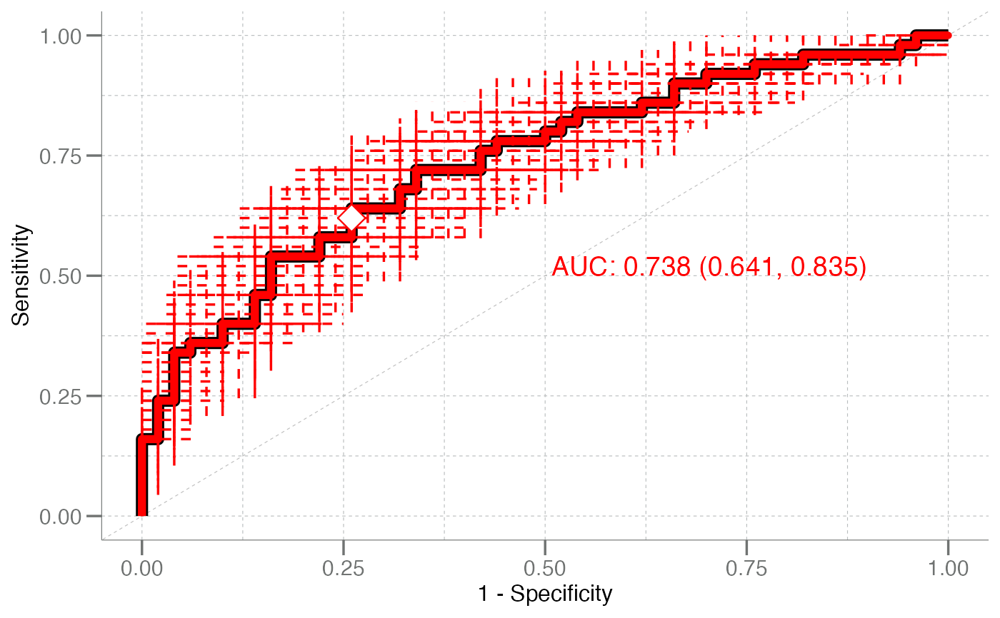
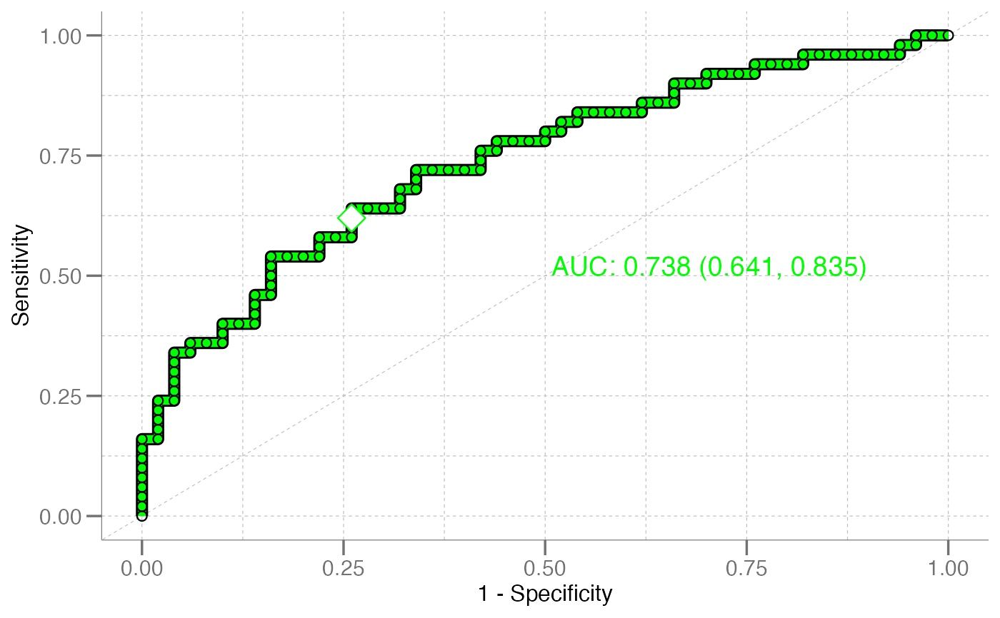
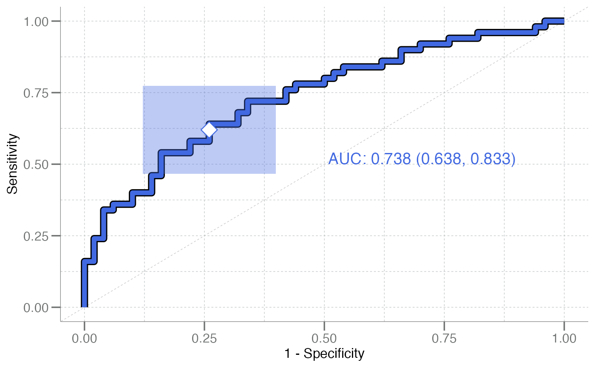
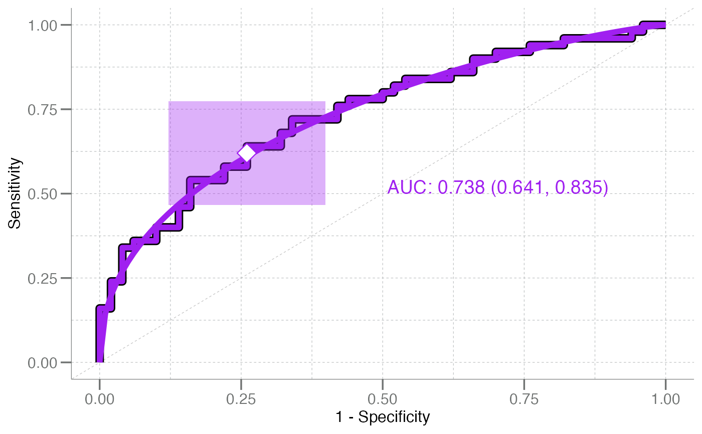
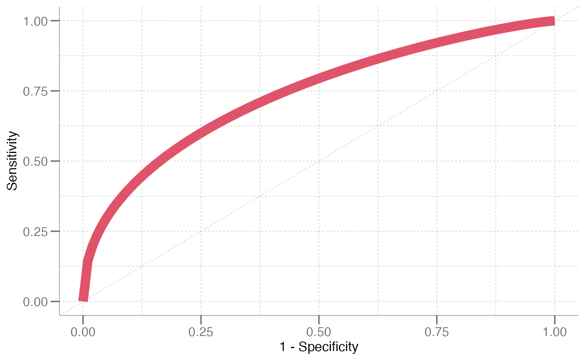
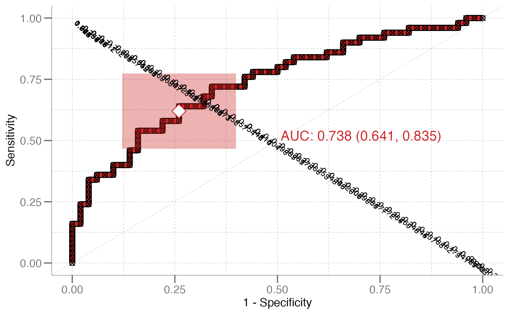
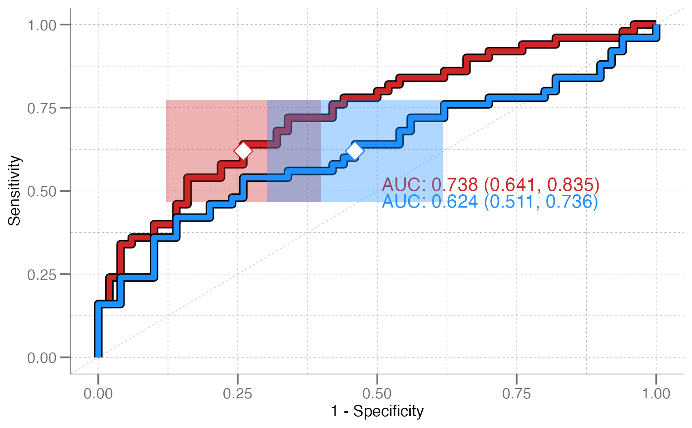

Plot Empirical ROC Curve
plot_emp_roc.RdPlotting function to generate a receiver operator criterion
(ROC) curve for binary data and binary classifiers. This function is
a wrapper around geom_roc(), with window dressing for commonly used
aesthetics and annotations.
Usage
plot_emp_roc(
truth,
predicted,
pos_class,
auc = TRUE,
add = 0L,
boot_auc = FALSE,
adj = c(0, 0),
auc_pos = c(0.5, 0.5),
auc_shift = 1.25,
auc_label = NULL,
auc_size = 5,
shape = NULL,
size = 2,
cutoff = 0.5,
cutoff_size = 5,
cutoff_shape = 23,
col = 1,
ci95 = TRUE,
lwd = 2,
outline = TRUE,
boxes = TRUE,
box_alpha = 0.35,
debug = FALSE,
plot_fit = FALSE,
do_grid = TRUE
)Arguments
- truth
character(n)orfactor(n). A vector of true class names. In most instances you will have to also pass apos_classargument defining the positive/event class.- predicted
numeric(n). A numeric vector of class probabilities.- pos_class
character(1). Name of the "positive" or "event" class.- auc
logical(1). Should the AUC be printed on the plot?- add
integer(1). The position in the plotting stack indicating where to add the ROC curve relative to an existing plot. Zero indexing is used, thusadd = 0L(default) refers to a new plot andadd = 1Lwill add a ROC layer to the existing plot and correctly position theAUCannotations shifted accordingly.- boot_auc
logical(1). Should bootstrap confidence intervals of AUC be calculated?- adj
numeric(1)in[0, 1]. Coordinates that are used to align the AUC text.- auc_pos
numeric(1)in[0, 1]indicating where to place the AUC text. Must be oflength == 2L, indicating the x-axis and y-axis positions, respectively. By default, the AUC will be placed slightly to the right of center of the plot.- auc_shift
The vertical (downward) shift between AUC text values if multiple ROCs are plotted.
- auc_label
character(1). Adds an additional label to the AUC text, i.e."AUC = 0.99", with label "Extra Text": "Extra Text AUC = 0.99"). Must be added individually to each plot.- auc_size
numeric(1). The size for the AUC text.- shape
numeric(1). Shape of points (between 0 and 25), similar topchofgraphics::points(). Seeggplot2::geom_point().- size
numeric(1). Size of points. Similar tocexofgraphics::points(). Modifyingsizewill not affect the plot ifshapeis set toNULL(the default). See [geom_point())].[geom_point())]: R:geom_point())
- cutoff
numeric(1). The decision cutoff, aka operating point, for the positive classes. By default, the operating point is set to 0.5. Alternatively, choosing a negative number calculates the cutoff corresponding to the maximum perpendicular distance between the curve and the unit diagonal. The CI95 of the operating point (boxes) can be omitted by settingcutoff = NA.- cutoff_size
numeric(1)in[0, 1], the character size for the cutoff point symbol.- cutoff_shape
numeric(1). The point symbol used for the cutoff point plotted on the ROC. Defaults to a diamond (23).- col
character(1)orinteger(1). Specify the colors for lines, points, bar, box, or ROC.- ci95
logical(1). Should any confidence intervals be plotted?- lwd
numeric(1). Line width (seepar()).- outline
logical(1). Should black outlines be drawn around the main plot line?- boxes
logical(1). Should confidence interval boxes be drawn (showing the joint CI95 of the sensitivity and specificity confidence intervals) at the cutoff point?- box_alpha
numeric(1)in[0, 1], the shading transparency for the confidence interval box at a given cutoff.- debug
logical(1). Should debugging mode be activated? When activated, annotates the values of the plotting steps at each cutoff, prints the "positive class", prints the prediction data to the console, and various other internal objects useful for debugging.- plot_fit
logical(1). Should a maximum-likelihood (or least-squares if ML fails) fit of the curve be plotted? Ifplot_fit = TRUE, only the fit will be plotted, without the empirical ROC. Can also beplot_fit = "both", where a fit will be added to the empirical ROC.- do_grid
logical(1). Should grid lines be added to the ROC?
Examples
true <- rep(c("control", "disease"), each = 50)
pred <- withr::with_seed(8,
c(rnorm(50, mean = 0.4, sd = 0.2), # control predictions
rnorm(50, mean = 0.6, sd = 0.2)) # disease predictions
)
plot_emp_roc(true, pred, pos_class = "disease", col = "dodgerblue")
plot_emp_roc(true, pred, pos_class = "disease", ci95 = TRUE, boxes = FALSE,
col = "red")

plot_emp_roc(true, pred, pos_class = "disease", ci95 = FALSE, shape = 21,
col = "green")

plot_emp_roc(true, pred, pos_class = "disease", boot_auc = TRUE,
col = "royalblue")

plot_emp_roc(true, pred, pos_class = "disease", plot_fit = "both",
col = "purple")

plot_emp_roc(true, pred, pos_class = "disease", plot_fit = TRUE, ci95 = FALSE,
auc = FALSE, cutoff = NA, col = 2, lwd = 4) # curve only; no cutoff

# Debugging with `debug = TRUE` displays
# curve points to the console
plot_emp_roc(true, pred, pos_class = "disease", debug = TRUE,
col = "firebrick3")
#> ══ Debugging ══════════════════════════════════════════════════════════
#> ══ Values Top ═════════════════════════════════════════════════════════
#> truth pred
#> 79 disease 1.0752167
#> 84 disease 1.0089215
#> 68 disease 0.9278396
#> 92 disease 0.9137884
#> 86 disease 0.8430566
#> 51 disease 0.8159903
#> ══ Values Bottom ══════════════════════════════════════════════════════
#> truth pred
#> 14 control 0.141102184
#> 33 control 0.089221718
#> 77 disease 0.020540406
#> 46 control 0.008477501
#> 90 disease -0.002905448
#> 30 control -0.004121896
#> 9 control -0.202210335
#> ══ Parameters ═════════════════════════════════════════════════════════
#> † pos_class ❯ disease
#> † boot_auc ❯ FALSE
#> † outline ❯ TRUE
#> † cutoff ❯ 0.5
#> † add ❯ 0
#> ═══════════════════════════════════════════════════════════════════════
#> # A tibble: 100 × 12
#> cutoff tp fn fp tn sensitivity specificity ppv npv
#> <dbl> <dbl> <dbl> <dbl> <dbl> <dbl> <dbl> <dbl> <dbl>
#> 1 1.08 1 49 0 50 0.02 1 1 0.505
#> 2 1.01 2 48 0 50 0.04 1 1 0.510
#> 3 0.928 3 47 0 50 0.06 1 1 0.515
#> 4 0.914 4 46 0 50 0.08 1 1 0.521
#> 5 0.843 5 45 0 50 0.1 1 1 0.526
#> 6 0.816 6 44 0 50 0.12 1 1 0.532
#> 7 0.808 7 43 0 50 0.14 1 1 0.538
#> 8 0.794 8 42 0 50 0.16 1 1 0.543
#> 9 0.790 8 42 1 49 0.16 0.98 0.889 0.538
#> 10 0.757 9 41 1 49 0.18 0.98 0.9 0.544
#> # ℹ 90 more rows
#> # ℹ 3 more variables: mcc <dbl>, perpD <dbl>, YoudenJ <dbl>
#> Please note: the 'size' and 'shape' arguments are locked
#> when in debugging mode and cannot be modified.

# Multiple curves can be drawn on the same plot
true2 <- rep(c("control", "disease"), each = 50)
pred2 <- withr::with_seed(8,
c(rnorm(50, mean = 0.5, sd = 0.3),
rnorm(50, mean = 0.7, sd = 0.4))
)
plot_emp_roc(true, pred, pos_class = "disease", col = "firebrick3") +
plot_emp_roc(true2, pred2, pos_class = "disease",
col = "dodgerblue", add = 1)
